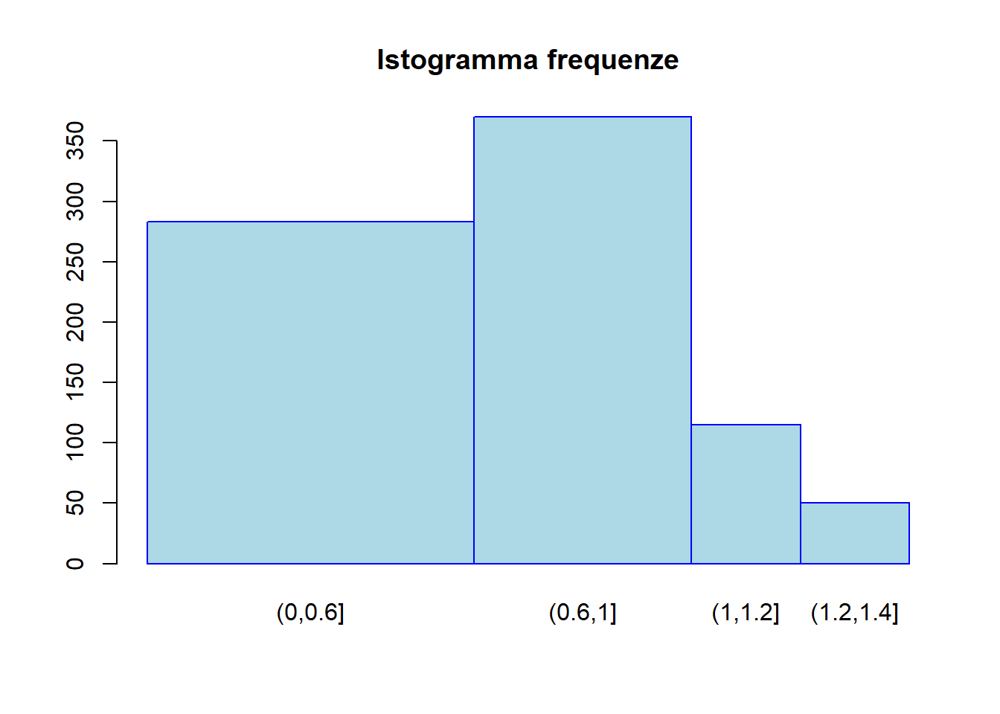
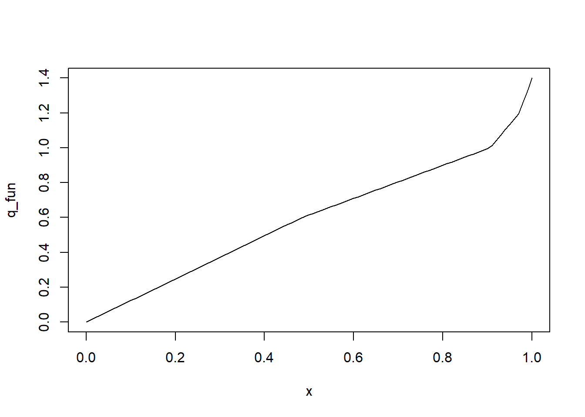
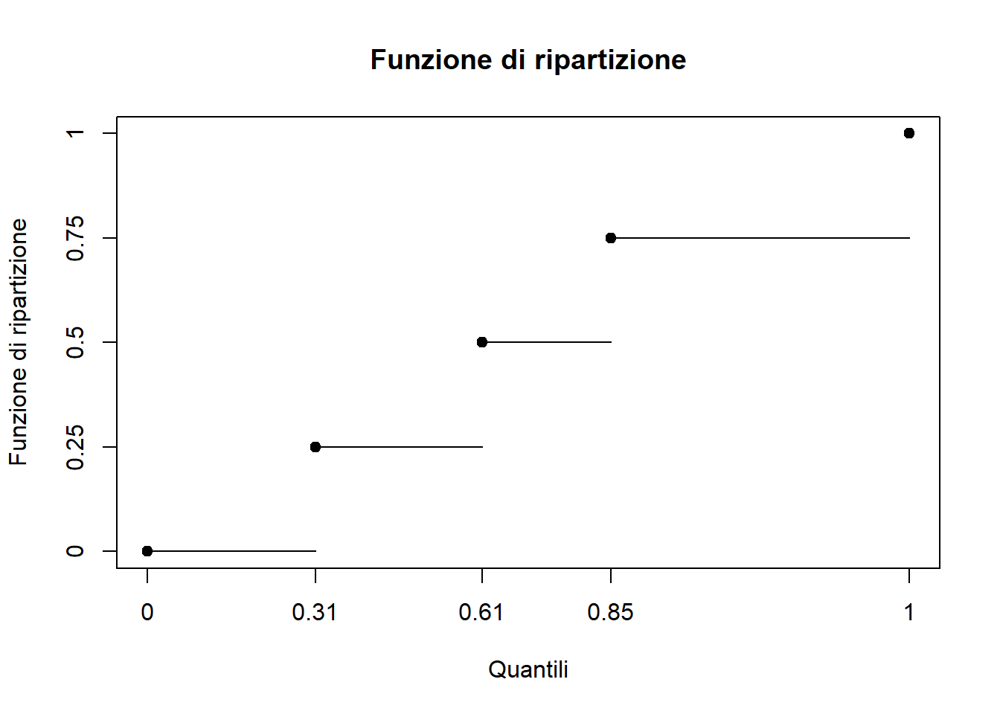

4 Esercitazione 4
4.1 Esercizio 1
La seguente tabella riporta la distribuzione di 351 imprese secondo il fatturato \(X\) del 2017 (in milioni di Euro):
| Classi di \(X\) | Frequenze |
|---|---|
| \((0,0.6]\) | 170 |
| \((0.6,1]\) | 148 |
| \((1,1.2]\) | 23 |
| \((1.2,1.4]\) | 10 |
| Totale | 351 |
- Si individui la classe modale del carattere \(X\).
- Si forniscano il primo ed il terzo quartile di \(X\) e di commentino i valori ottenuti.
- Si calcoli la differenza interquartile e si commenti il valore ottenuto.
- Si calcoli la media aritmetica del carattere \(X\) e si commenti il valore ottenuto.
- Alle aziende precedentemente considerate, sono state aggiunte altre 134 aziende il cui fatturato del 2017 è mediamente pari a 420000 Euro. Si determini il fatturato medio di tutte le 485 imprese.
- Come varierebbe il risultato precedente se i valori fossero espressi in migliaia di Dollari statunitensi? Si consideri che un Euro vale 1.23 Dollari statunitensi (dato 2017).
4.2 Esercizio 2
Sono stati rilevati i ritardi (espressi in minuti) dei treni di una linea ferroviaria in un determinato giorno. Le diverse rilevazioni sono state classificate a seconda direzione di percorrenza dei treni. La seguente tabella riporta le distribuzioni di frequenza.
| Ritardo | Andata | Ritorno | Totale |
|---|---|---|---|
| \((0,5]\) | 14 | 10 | 24 |
| \((5,10]\) | 9 | 8 | 17 |
| \((10,20]\) | 7 | 7 | 14 |
| \((20,30]\) | 2 | 3 | 5 |
| Totale | 32 | 28 | 60 |
- Si calcoli lo scostamento medio assoluto dalla media aritmetica dei ritardi.
- Si valuti quale gruppo presenta maggiore variabilità.
4.3 Esercizio 3
Gli incassi \(X\) (in milioni di euro) di 5 punti vendita di una catena di grandi magazzini sono i seguenti: \[11.5;\,2.3;\, 5.5;\,8.9; \,9.7\]
- Si determinino il campo di variazione e la differenza interquartile di \(X\).
- Si calcoli lo scarto quadratico medio di \(X\) e si commenti il valore ottenuto.
- Sia \(Y\) gli incassi (in milioni di euro) dopo l’applicazione di un’imposta proporzionale del \(10\%\) e un’imposta fissa di 10000 euro. Si determini lo scarto quadratico medio di \(Y\).
- Si calcoli la differenza media semplice di \(X\) e si commenti il valore ottenuto.
4.4 Esercizio 4
La seguente tabella riporta la distribuzione delle retribuzioni mensili \(X\) (in migliaia di euro) di 42 dipendenti di un’azienda. I dati sono raggruppati in classi e per ogni classe è riportato anche il totale di \(X\).
| Classi | N.ro Dipendenti | Totale di classe |
|---|---|---|
| \((0,1]\) | 4 | 3.40 |
| \((1,1.5]\) | 14 | 19.60 |
| \((1.5,2]\) | 21 | 34.65 |
| \((2,4]\) | 3 | 8.10 |
| Totale | 42 | 65.75 |
- Si calcoli lo scostamento medio assoluto dalla media aritmetica di \(X\).
- Si calcoli il coefficiente di variazione di \(X\) e si commenti il valore ottenuto.
- Si calcoli la differenza media semplice di \(X\) e si commenti il valore ottenuto.
Soluzioni
Esercizio 1
| \(j\) | \(\overline{x}_j\) | \(n_j\) | \(d_j\) | \(h_j\) | \(N_j\) | \(\overline{x}_jn_j\) | \(F_j\) |
| 1 | 0.3 | 170 | 0.6 | 283.33 | 170 | 51 | 0.4843 |
| 2 | 0.8 | 148 | 0.4 | 370 | 318 | 118.4 | 0.906 |
| 3 | 1.1 | 23 | 0.2 | 115 | 341 | 23.5 | 0.9715 |
| 4 | 1.3 | 10 | 0.2 | 20 | 351 | 13 | 1 |
| Totale | 351 | 207.7 |
# ES 1
rm(list = ls())
breaks <- c(0, 0.6, 1, 1.2, 1.4)
n <- c(170, 148, 23, 10)
k <- length(n)
N <- sum(n)
x <- c(breaks[-1] + breaks[-k-1])/2
d <- c(breaks[-1] - breaks[-k-1])
h <- round(n / d, 2)
Nc <- cumsum(n)
Fj <- Nc / N-
Dalle frequenze specifiche \(h_j\) si osserva che la classe modale è la seconda \((0.6, 1]\) e rappresenta il \(42.17\%\) delle imprese considerate. (disegnare istogramma)
## a) pos_moda <- which.max(h) n[pos_moda] / N## [1] 0.4216524barplot(h, width = d, space = 0, col = 'lightblue', border='blue', names.arg = c("(0,0.6]", "(0.6,1]", "(1,1.2]", "(1.2,1.4]"), main='Istogramma frequenze') -
Primo quartile \[\frac{N}{4}=87.75>0;\quad h=1\] \[q_1=l_1^-+\frac{\frac{N}{4}-N_0}{N_1-N_0}\cdot [l_1^+-l_1^- ]=0+\frac{87.75-0}{170-0}\cdot [0,6-0]=0.3097\] Un quarto delle imprese considerate ha un fatturato minore di 309700 Euro. \[3 \cdot \frac{N}{4}=263.25>170;\quad h=2\] \[q_3=l_2^-+\frac{3\cdot\frac{N}{4}-N_1}{N_2-N_1}\cdot [l_2^+-l_2^- ]=0.6+\frac{263.25-170}{318-170}\cdot [1-0,6]=0.8520\] Tre quarti delle imprese considerate ha un fatturato minore di 852000 Euro. (disegnare funzione di ripartizione)
## b) N/4## [1] 87.75h <- 1 q1 <- round(breaks[h] + (N/4 - 0)/(Nc[h] - 0)*(breaks[h+1] - breaks[h]), 4); q1## [1] 0.30973*N/4## [1] 263.25h <- min(which(Nc > 3*N/4)); h## [1] 2q3 <- round(breaks[h] + (3*N/4 - Nc[h-1])/(Nc[h] - Nc[h-1])*(breaks[h+1] - breaks[h]), 4); q3## [1] 0.852q_fun <- approxfun(c(0, Fj), breaks) plot(q_fun)
q_fun(0.25*c(1, 3))## [1] 0.3097059 0.8520270plot(q_fun(0.25*c(0,1,2,3,4)),0.25*c(0,1,2,3,4), xlab = "Quantili", ylab="Funzione di ripartizione", axes = F, col="black", pch=19, main="Funzione di ripartizione") box() axis(1, at=q_fun(0.25*c(0,1,2,3,4)), labels=c(0,round(q_fun(0.25*c(1,2,3)),2),1)) axis(2, at=0.25*c(0,1,2,3,4), labels=0.25*c(0,1,2,3,4)) for(i in 1:4){ segments(q_fun(0.25*(i-1)),0.25*(i-1), q_fun(0.25*i), 0.25*(i-1), col = 'black') }
-
\[Q_3-Q_1=0.8520-0.3097=0.5423\] Il 50% dei fatturati “centrali” sono compresi in un intervallo di ampiezza pari a 542300 Euro.
## c) q3 - q1## [1] 0.5423 -
\[ \overline{x}=\frac{\displaystyle\sum_{ j=1}^kx_j n_j}{N}=\frac{207.7}{351}=0.5917\] Mediamente le imprese hanno fatturato 591738 Euro ciascuna.
## d) weighted.mean(x, n)## [1] 0.5917379 -
Proprietà associativa della media aritmetica. \[M_1=\frac{M_1^{(1)}\cdot N_1+M_1^{(2)}\cdot N_2}{N_1+N_2}=\frac{0.5917\cdot351+0.42\cdot134}{485}=0.5443\quad\mathrm{milioni \ di \ Euro}\]
(M1 <- (weighted.mean(x,n)*351+0.42*134)/485)## [1] 0.5442887 -
Linearità della media aritmetica. \[Y=a+bX\Rightarrow M_1(Y)=a+bM_1(X)\] \[a=0, \quad b=1.23\] \[M_1(Y)=1.23\cdot 0.5443=0.6695\quad \mathrm{milioni \ di \ Dollari \ statunitensi}\]
M1 * 1.23## [1] 0.6694751
Esercizio 2
Tabella sulla distribuzione totale
| \(j\) | \(\overline{x}_j\) | \(n_j\) | \(\overline{x}_jn_j\) | \(|\overline{x}_j-\mu|\) | \(|\overline{x}_j-\mu|n_j\) |
|---|---|---|---|---|---|
| 1 | 2.5 | 24 | 60.0 | 6.2083 | 149.0000 |
| 2 | 7.5 | 17 | 127.5 | 1.2083 | 20.5417 |
| 3 | 15 | 14 | 210.0 | 6.2917 | 88.0833 |
| 4 | 25 | 5 | 125.0 | 16.2917 | 81.4583 |
| Totale | N = 60 | 522.5 | 339.0833 |
# ES 2
rm(list = ls())
breaks <- c(0, 5, 10, 20, 30)
nA <- c(14, 9, 7, 2)
nR <- c(10, 8, 7, 3)
nTot <- nA+nR
N <- sum(nTot)
k <- length(nA)
N_A <- sum(nA)
N_R <- sum(nR)
x <- c(breaks[-1] + breaks[-k-1])/2
d <- c(breaks[-1] - breaks[-k-1])-
Calcoliamo la media aritmetica \[\mu=\frac{\displaystyle \sum_{j=1}^kx_jn_j}{N}=\frac{552.5}{60}=8.7083\]
(mu <- sum(x*nTot)/N)## [1] 8.708333Mediamente i ritardi sono pari a 9.2083 minuti.
Quindi calcoliamo \(S_\mu\) \[S_\mu=\frac{\displaystyle \sum_{j=1}^k|x_j-\mu|n_j}{N}=\frac{339.0833}{60}=5.6514\]
(S_mu <- sum(abs(x-mu)*nTot)/N)
Mediamente i ritardi si discostano dalla media aritmetica di 5.6514 minuti.## [1] 5.651389 -
Calcoliamo ora le medie e le varianze di ogni singolo gruppo.
Tabella sulla distribuzione dei treni “Andata”\(j\) \(\overline{x}_j\) \(n_{jA}\) \(\overline{x}_j n_{jA}\) \(\overline{x}_j^2\) \(\overline{x}^2_{j}n_{jA}\) 1 2.5 14 35.0 6.25 87.50 2 7.5 9 67.5 56.25 506.25 3 15 7 105.0 225 1575.00 4 25 2 50.0 625 1250.00 Totale \(N_A=32\) 257.5 3418.75 \[\overline{x}_A=\frac{\displaystyle \sum_{j=1}^k\overline{x}_jn_{jA}}{N_A}=\frac{257.5}{32}=8.046\] \[\sigma_A^2=\frac{\displaystyle \sum_{j=1}^k \overline{x}^2_{j}n_{jA}}{N_A}-\overline{x}^2_A=\frac{3418.75}{32}-8.0469^2=42.0837\]
(mu_A <- sum(x*nA)/sum(nA))## [1] 8.046875(sigma2_A <- sum(x^2*nA)/sum(nA)-mu_A^2)## [1] 42.08374Tabella sulla distribuzione dei treni “Ritorno”
\(j\) \(\overline{x}_j\) \(n_{jR}\) \(\overline{x}_j n_{jR}\) \(\overline{x}_j^2\) \(\overline{x}^2_{j}n_{jR}\) 1 2.5 10 25 6.25 62.5 2 7.5 8 60 56.25 450.0 3 15 7 105 225 1575.0 4 25 3 75 625 1875.0 Totale \(N_R=28\) 265 3962.5 \[\overline{x}_R=\frac{\displaystyle \sum_{j=1}^k\overline{x}_jn_{jR}}{N_R}=\frac{265}{28}=9.4843\] \[\sigma_R^2=\frac{\displaystyle \sum_{j=1}^k \overline{x}^2_{j}n_{jR}}{N_R}-\overline{x}^2_R=\frac{3962.5}{28}-9.4843^2=51.9452\]
(mu_R <- sum(x*nR)/sum(nR))## [1] 9.464286(sigma2_R <- sum(x^2*nR)/sum(nR)-mu_R^2)## [1] 51.94515Per confrontare la variabilità dei gruppi dobbiamo usare un indice percentuale. \[\sigma_A=\sqrt{\sigma_A^2}=6.4872\,\,\mathrm{minuti}, \quad CV_A=\frac{\sigma_A}{\overline{x}_A}\cdot 100=80.62\%\] \[\sigma_R=\sqrt{\sigma_R^2}=7.2073\,\,\mathrm{minuti}, \quad CV_R=\frac{\sigma_R}{\overline{x}_R}\cdot 100=76.15\%\] C’è meno variabilità nel secondo gruppo.
(CV_A = sqrt(sigma2_A)/mu_A)## [1] 0.8061761(CV_R = sqrt(sigma2_R)/mu_R)## [1] 0.7615259
Esercizio 3
| \(i\) | \(x_{(i)}\) | \(F_i\) | \(x_{(i)}^2\) |
|---|---|---|---|
| 1 | 2.3 | 0.2 | 5.29 |
| 2 | 5.5 | 0.4 | 30.25 |
| 3 | 8.9 | 0.6 | 79.21 |
| 4 | 9.7 | 0.8 | 94.09 |
| 5 | 11.5 | 1 | 132.25 |
| Totale | 37.9 | 341.09 |
# ES 3
rm(list = ls())
x <- c(11.5, 2.3, 5.5, 8.9, 9.7)
N <- length(x)-
\[\Delta_C = x_{(N)}-x_{(1)}=11.5-2.3=9.2\,\,\mathrm{milioni \ di \ euro}\] \[ \frac{N}{4}=1.25>1;\quad h=2;\quad q_1=x_{(2)}=5.5\] \[3\cdot \frac{N}{4}=3.75>3;\quad h=4;\quad q_3=x_{(4)}=9.7\] \[\Delta_q=q_3-q_1=4.2 \,\,\mathrm{milioni \ di \ euro}\]
## a) x <- sort(x) Fi <- 1:N/N N/4## [1] 1.25N/4*3## [1] 3.75x[4] - x[2]## [1] 4.2 -
\[\overline{x}=\frac{37.9}{5}=7.58 \,\, \mathrm{milioni \ di \ euro}\] \[M_1(X^2)=\frac{341.09}{5}=68.218\] \[Var(X)=[(X-\overline{x})^2]=M_1(X^2)-\overline{x}^2=68.218-7.58^2=10.7616\] \[\sigma=\sqrt{Var(X)}=3.2805\,\,\mathrm{milioni \ di \ euro}\] Gli incassi dei punti vendita differiscono dal valore medio di 3.2805 milioni di euro.
(mu = sum(x)/N)## [1] 7.58(m_x2 = sum(x^2)/N)## [1] 68.218(var_x = m_x2-mu^2)## [1] 10.7616(sigma = sqrt(var_x))## [1] 3.280488 -
\[Y=a+bX\Rightarrow \sigma(Y)=|b|\sigma(X)\] \[a=0.01,\quad b=0.9\] \[\sigma(Y)=0.9\cdot3.2805=2.9524\,\,\mathrm{milioni \ di\ euro}\]
(sigmaY=0.9*sigma)## [1] 2.952439 -
\[\Delta = \frac{2}{N(N-1)}\sum_{i=2}^N\sum_{j=1}^{i-1} |x_i-x_j|\]
\(|x_i-x_j|\) 2.3 5.5 8.9 9.7 11.5 Totale 2.3 0 5.5 3.2 0 8.9 6.6 3.4 0 9.7 7.4 4.2 0.8 0 11.5 9.2 6 2.6 1.8 0 Totale 42.5 \[\Delta=\frac{2}{4\cdot5}45.2=4.52\] Gli incassi dei punti vendita differiscono tra loro di 4.52 milioni di Euro
## d) abs(outer(x, x, "-"))## [,1] [,2] [,3] [,4] [,5] ## [1,] 0.0 3.2 6.6 7.4 9.2 ## [2,] 3.2 0.0 3.4 4.2 6.0 ## [3,] 6.6 3.4 0.0 0.8 2.6 ## [4,] 7.4 4.2 0.8 0.0 1.8 ## [5,] 9.2 6.0 2.6 1.8 0.0sum(abs(outer(x, x, "-")))/2## [1] 45.2sum(abs(outer(x, x, "-")))/5/4## [1] 4.52
Esercizio 4
| \(j\) | \(n_j\) | \(t_j\) | \(N_j\) | \(x_j\) | \(|x_j-\mu|\) | \(|x_j-\mu|n_j\) | \(x_j^2\) | \(x_j^2n_j\) |
|---|---|---|---|---|---|---|---|---|
| 1 | 4 | 3.40 | 4 | 0.85 | 0.7155 | 2.8620 | 0.7225 | 2.8900 |
| 2 | 14 | 19.60 | 18 | 1.4 | 0.1655 | 2.3170 | 1.96 | 27.4400 |
| 3 | 21 | 34.65 | 39 | 1.65 | 0.0845 | 1.7745 | 2.7225 | 57.1725 |
| 4 | 3 | 8.10 | 42 | 2.7 | 1.1345 | 3.4035 | 7.29 | 21.8700 |
| 42 | 65.75 | 10.3570 | 109.3725 |
# ES 4
rm(list = ls())
brk <- c(0, 1, 1.5, 2, 4)
n <- c(4, 14, 21, 3)
t <- c(3.4, 19.6, 34.65, 8.1)
x <- t/n
k <- length(n)-
Notare che \(x_jn_j=t_j\) e quindi il loro totale è il numeratore della media aritmetica. \[μ=\frac{65.75}{42}=1.5655\,\,\mathrm{migliaia\ di\ euro}\] Per calcolare \(S_μ\) è più coerente utilizzare i valori centrali come valori rappresentativi della classe \[S_μ=\frac{\displaystyle \sum_{j=1}^k|x_j-μ| n_j}{N}=\frac{10.3570}{42}=0.2466\,\,\mathrm{migliaia\ di\ euro} \]
## a) m <- round(sum(t) / sum(n), 4); m## [1] 1.5655x## [1] 0.85 1.40 1.65 2.70abs(x - m)## [1] 0.7155 0.1655 0.0845 1.1345abs(x - m)*n## [1] 2.8620 2.3170 1.7745 3.4035sum(abs(x - m)*n)## [1] 10.357round(sum(abs(x - m)*n) / sum(n), 4)## [1] 0.2466 -
\[CV=M_2 \left(\frac{|X-\mu|}{\mu}\cdot 100\right)=\frac{\sigma}{\mu}\cdot 100\] Ora come valori rappresentativi prendiamo i valori medi di classe, pari al totale di classe diviso per le rispettive frequenze. Notare che $x_j n_j=t_j $ e quindi il loro totale è il numeratore della media aritmetica.
\[\begin{align} \sigma^2 & = M_2 (X)^2-M_1 (X)^2=\frac{109.3725}{42}-1.5655^2=0.1533\\ \sigma & =0.3916\,\,\mathrm{migliaia\ di\ euro}\\ CV & =0.2501\cdot 100=25.01\%\end{align}\]
Mediamente i valori di \(X\) si discostano dalla media del 25.01%.
## b) (sigma2 <- sum(x^2*n)/sum(n)-m^2)## [1] 0.1533169(sigma <- sqrt(sigma2))## [1] 0.391557(CV <- sigma/m*100)## [1] 25.01163 -
\[\Delta=\frac{2}{N(N-1)}\sum_{i=2}^k\sum_{j=1}^{i-1}|x_i-x_j|n_in_j\]
\(|x_i-x_j|n_in_j\) 0.85 1.4 1.65 2.7 0.85 \(0\) 4 1.4 \(0.55\cdot56\) \(0\) 14 1.65 \(0.80\cdot84\) \(0.25\cdot294\) \(0\) 21 2.7 \(1.85\cdot12\) \(1.30\cdot42\) \(1.05\cdot63\) \(0\) 3 4 14 21 3 314.45 ## c) x## [1] 0.85 1.40 1.65 2.70n## [1] 4 14 21 3abs(outer(x, x, "-"))## [,1] [,2] [,3] [,4] ## [1,] 0.00 0.55 0.80 1.85 ## [2,] 0.55 0.00 0.25 1.30 ## [3,] 0.80 0.25 0.00 1.05 ## [4,] 1.85 1.30 1.05 0.00abs(outer(n, n, "*"))## [,1] [,2] [,3] [,4] ## [1,] 16 56 84 12 ## [2,] 56 196 294 42 ## [3,] 84 294 441 63 ## [4,] 12 42 63 9sum(abs(outer(x, x, "-"))*abs(outer(n, n, "*")))/2## [1] 314.45sum(abs(outer(x, x, "-"))*abs(outer(n, n, "*")))/sum(n)/(sum(n) - 1)## [1] 0.3652149sum(abs(outer(x, x, "-"))*abs(outer(n, n, "*")))/sum(n)/(sum(n) - 1)/2/m## [1] 0.1166448